Last updated: 2026-08-04
Checks: 6 1
Knit directory: log1p_experiments/
This reproducible R Markdown analysis was created with workflowr (version 1.7.2). The Checks tab describes the reproducibility checks that were applied when the results were created. The Past versions tab lists the development history.
Great! Since the R Markdown file has been committed to the Git repository, you know the exact version of the code that produced these results.
Great job! The global environment was empty. Objects defined in the global environment can affect the analysis in your R Markdown file in unknown ways. For reproduciblity it’s best to always run the code in an empty environment.
The command set.seed(20240402) was run prior to running
the code in the R Markdown file. Setting a seed ensures that any results
that rely on randomness, e.g. subsampling or permutations, are
reproducible.
Great job! Recording the operating system, R version, and package versions is critical for reproducibility.
To ensure reproducibility of the results, delete the cache directory
c_grid_sim_cache and re-run the analysis. To have workflowr
automatically delete the cache directory prior to building the file, set
delete_cache = TRUE when running wflow_build()
or wflow_publish().
Great job! Using relative paths to the files within your workflowr project makes it easier to run your code on other machines.
Great! You are using Git for version control. Tracking code development and connecting the code version to the results is critical for reproducibility.
The results in this page were generated with repository version 4e965ab. See the Past versions tab to see a history of the changes made to the R Markdown and HTML files.
Note that you need to be careful to ensure that all relevant files for
the analysis have been committed to Git prior to generating the results
(you can use wflow_publish or
wflow_git_commit). workflowr only checks the R Markdown
file, but you know if there are other scripts or data files that it
depends on. Below is the status of the Git repository when the results
were generated:
Ignored files:
Ignored: .DS_Store
Ignored: analysis/c_grid_sim_cache/
Ignored: analysis/figure/
Ignored: analysis/hoyer_sparsity_c_cache/
Ignored: analysis/log1p_identifiability_cache/
Note that any generated files, e.g. HTML, png, CSS, etc., are not included in this status report because it is ok for generated content to have uncommitted changes.
These are the previous versions of the repository in which changes were
made to the R Markdown (analysis/c_grid_sim.Rmd) and HTML
(docs/c_grid_sim.html) files. If you’ve configured a remote
Git repository (see ?wflow_git_remote), click on the
hyperlinks in the table below to view the files as they were in that
past version.
| File | Version | Author | Date | Message |
|---|---|---|---|---|
| Rmd | 4e965ab | Eric Weine | 2026-08-04 | Add a fitted-vs-true rates section to the c-grid notebook |
| html | 356fc6c | Eric Weine | 2026-08-02 | Build site. |
| Rmd | a85bccf | Eric Weine | 2026-08-02 | Add c-grid simulation results and the identifiability analysis |
library(ggplot2)
library(cowplot)
library(fastTopics)
library(log1pNMF)
theme_set(theme_cowplot(font_size = 11))## Where the simulation code and its outputs live. The generative functions are
## sourced rather than restated, so the description below cannot drift from what
## actually produced the data.
repo_dir <- "~/Documents/log1pNMF/inst/paper_figures/experiments"
exp_dir <- path.expand(repo_dir)
cells_dir <- file.path(exp_dir, "c_grid_sim") # 640 per-cell .rds
metrics <- file.path(exp_dir, "c_grid_sim_metrics.rds")
stopifnot(dir.exists(exp_dir), file.exists(metrics), dir.exists(cells_dir))
source(file.path(exp_dir, "c_grid_sim_common.R"))The log1p model has a link parameter \(c\):
\[ y_{ij} \sim \text{Poisson}(\lambda_{ij}), \qquad \log\!\left(1 + \frac{\lambda_{ij}}{c}\right) = \sum_{k=1}^{K}\ell_{ik}f_{jk} =: \theta_{ij} \]
so \(\lambda_{ij} = c\,(e^{\theta_{ij}} - 1)\). As \(c \to \infty\) the link becomes linear and the model is ordinary Poisson NMF (the topic model); as \(c \to 0\) it becomes additive on the log scale. \(c\) therefore decides whether the factors describe absolute or relative changes.
This page asks: if the data really were generated at some \(c_{\text{true}}\), what happens when we fit at a different \(c_{\text{fit}}\)? We simulate at eight values of \(c\) and fit at all eight, over ten seeds — a full \(8 \times 8\) cross.
For each seed we draw one truth and reuse it at every \(c_{\text{true}}\):
Then \(\theta_0 = LF_0'\), and the realized truth at a given \(c\) is
\[ \theta = \alpha_c\,\theta_0 + \beta_c, \qquad \lambda = c\,\text{expm1}(\theta) \quad (\text{or } \lambda = \theta \text{ when } c = \infty), \qquad y_{ij}\sim\text{Poisson}(\lambda_{ij}). \]
Since \(\sum_k \ell_{ik} = 1\), adding \(\beta_c\) to every entry of \(F\) shifts \(\theta\) by exactly that constant. So \(\theta = \alpha_c\theta_0 + \beta_c\) is still \(L F_c'\) with \(F_c = \alpha_c F_0 + \beta_c\) — the offset costs no rank. Note \(F_c\) is therefore not sparse: it has a floor of \(\beta_c\) under every entry. The sparse object is \(F_0\).
sim_truthfunction (seed, n = N_ROWS, p = N_COLS, K = K_TRUE)
{
set.seed(seed)
G <- matrix(stats::rgamma(n * K, shape = A_SIG), n, K)
L <- G/rowSums(G)
lr <- log(F_RANGE)/2
F0 <- matrix(0, p, K)
for (k in seq_len(K)) {
nz <- stats::runif(p) > PI0
F0[nz, k] <- exp(stats::runif(sum(nz), -lr, lr))
}
colnames(L) <- colnames(F0) <- paste0("k", seq_len(K))
rownames(L) <- paste0("i", seq_len(n))
rownames(F0) <- paste0("j", seq_len(p))
list(L = L, F0 = F0, theta0 = L %*% t(F0))
}At small \(c\) the link is exponential, so any right tail in \(\theta_0\) gets exponentiated. An earlier version drew lognormal magnitudes and the \(c = 10^{-3}\) datasets came out with \(\max(Y) \approx 10^{16}\) while the \(c = \infty\) ones had \(\max(Y) \approx 90\). Bounding the magnitudes is what makes the datasets comparable across the grid at all.
A single scale on \(F\) cannot make these datasets comparable: at small \(c\) a fixed spread in \(\theta\) becomes a multiplicative spread in \(\lambda\) and the maximum explodes, while at large \(c\) the link is linear and the spread stays proportional. So there are two knobs per \(c\), solved numerically so that every dataset hits the same two targets:
The solve is two nested uniroot calls and is monotone in
each direction: the zero-fraction decreases in \(\beta\) at fixed \(\alpha\), and the upper quantile increases
in \(\alpha\) once \(\beta\) has been re-solved.
calibratefunction (theta0, cc, target_zero = TARGET_ZERO, target_q = TARGET_Q,
qprob = QPROB)
{
th_of_lam <- function(l) if (is.infinite(cc))
l
else log1p(l/cc)
lam_mid <- -log(target_zero)
th_hi <- th_of_lam(target_q)
th_mid <- th_of_lam(lam_mid)
beta_hi <- th_of_lam(1e+06)
beta_for <- function(alpha) {
f <- function(b) zero_frac(lambda_of(theta0, alpha, b,
cc)) - target_zero
if (f(0) <= 0)
return(0)
stats::uniroot(f, c(0, beta_hi), tol = 1e-12)$root
}
g <- function(la) {
alpha <- exp(la)
lam <- lambda_of(theta0, alpha, beta_for(alpha), cc)
as.numeric(stats::quantile(lam, qprob)) - target_q
}
la_hi <- log(200/max(theta0))
alpha <- exp(stats::uniroot(g, c(la_hi - 30, la_hi), tol = 1e-10)$root)
list(alpha = alpha, beta = beta_for(alpha))
}summ <- do.call(rbind, lapply(1:N_SEEDS, function(sd) {
tr <- sim_truth(sd)
do.call(rbind, lapply(C_GRID, function(cc) data_summary(sim_dataset(sd, cc, tr))))
}))
knitr::kable(
data.frame(
quantity = c("zero fraction of Y", "max(Y)", "mean(Y)",
"q99.9 of lambda", "gene mean q90/q10"),
min = c(min(summ$zero_frac), min(summ$max_Y), min(summ$mean_Y),
min(summ$q999_lam), min(summ$gene_mean_q90 / summ$gene_mean_q10)),
max = c(max(summ$zero_frac), max(summ$max_Y), max(summ$mean_Y),
max(summ$q999_lam), max(summ$gene_mean_q90 / summ$gene_mean_q10))),
digits = 3, caption = "Across all 80 datasets (10 seeds x 8 values of c).")| quantity | min | max |
|---|---|---|
| zero fraction of Y | 0.496 | 0.505 |
| max(Y) | 31.000 | 44.000 |
| mean(Y) | 0.935 | 1.982 |
| q99.9 of lambda | 20.000 | 20.000 |
| gene mean q90/q10 | 3.207 | 27.184 |
Warning: The above code chunk cached its results, but
it won’t be re-run if previous chunks it depends on are updated. If you
need to use caching, it is highly recommended to also set
knitr::opts_chunk$set(autodep = TRUE) at the top of the
file (in a chunk that is not cached). Alternatively, you can customize
the option dependson for each individual chunk that is
cached. Using either autodep or dependson will
remove this warning. See the
knitr cache options for more details.
The two calibrated targets are hit exactly, and max(Y)
and mean(Y) stay in a narrow band. The one quantity that is
not constant is the gene-level dynamic range, and that is
unavoidable: matching \(\lambda\)’s
distribution means matching \(\theta\)
up to a shift at small \(c\) but up to a scale at
large \(c\), and no single
reparameterization does both.
10 seeds \(\times\) 8 values of
\(c_{\text{true}}\) \(\times\) 8 values of \(c_{\text{fit}}\) = 640 cells, each fit from
both a rank-1 and a random start (1280 fits). Every fit
ran to convergence — an absolute log-likelihood change below 10^{-6}
between iterations — with 100,000 iterations as the only other cap and
no time limit. \(n = p = 300\), \(K = 3\) throughout, and \(c_{\text{fit}} = \infty\) is fit with
fastTopics::fit_poisson_nmf since no finite cc
represents that limit.
d <- readRDS(metrics)
## Best init per cell. The two agree to within 0.008 log-likelihood on all 640
## cells, so for the LIKELIHOOD figures this choice is immaterial. It is not
## immaterial for sparsity -- see that section.
key <- paste(d$seed, d$c_true, d$c_fit)
b <- d[order(key, -d$loglik), ]
b <- b[!duplicated(paste(b$seed, b$c_true, b$c_fit)), ]
b$subopt <- ave(b$loglik, paste(b$seed, b$c_true), FUN = max) - b$loglik
CLEV <- sort(unique(b$c_fit))
CLAB <- ifelse(is.infinite(CLEV), "∞",
format(CLEV, scientific = FALSE, trim = TRUE, drop0trailing = TRUE))
fc <- function(x) factor(x, levels = CLEV, labels = CLAB)
b$cf <- fc(b$c_fit)
b$cf_lab <- fc(b$c_true)
b$ct <- factor(paste("simulated at c =", fc(b$c_true)),
levels = paste("simulated at c =", CLAB))
c(cells = nrow(b), fits = nrow(d), converged = sum(d$converged)) cells fits converged
640 1280 1280 Comparing log-likelihoods across \(c_{\text{fit}}\) is legitimate: all eight are Poisson models for the same \(y\) under the same dominating measure with constants included, so no Jacobian enters.
win <- do.call(rbind, lapply(split(b, paste(b$seed, b$c_true)), function(x)
x[which.max(x$loglik), c("seed", "c_true", "c_fit")]))
cnt <- as.data.frame(table(ct = fc(win$c_true), cf = fc(win$c_fit)), responseName = "n")
cnt$lab <- ifelse(cnt$n == 0, "", cnt$n)
ggplot(cnt, aes(cf, ct)) +
geom_tile(aes(fill = n), colour = "white", linewidth = 0.6) +
geom_tile(data = data.frame(ct = CLAB, cf = CLAB), fill = NA,
colour = "#C2410C", linewidth = 0.9) +
geom_text(aes(label = lab, colour = n > 5), size = 4, show.legend = FALSE) +
scale_fill_gradient(low = "#F2F6F7", high = "#0E5C6B", name = "seeds\nwon",
limits = c(0, 10), breaks = c(0, 5, 10)) +
scale_colour_manual(values = c("FALSE" = "grey15", "TRUE" = "white")) +
scale_x_discrete(expand = c(0, 0)) + scale_y_discrete(expand = c(0, 0)) +
labs(x = "c used for fitting", y = "c used to simulate",
title = "Which c achieves the highest log-likelihood",
subtitle = "counts over 10 seeds; outlined cells are c_fit = c_true") +
coord_fixed() +
theme(plot.title = element_text(size = 13, face = "plain"),
plot.subtitle = element_text(size = 10, colour = "grey35"),
panel.border = element_rect(colour = "grey70", fill = NA))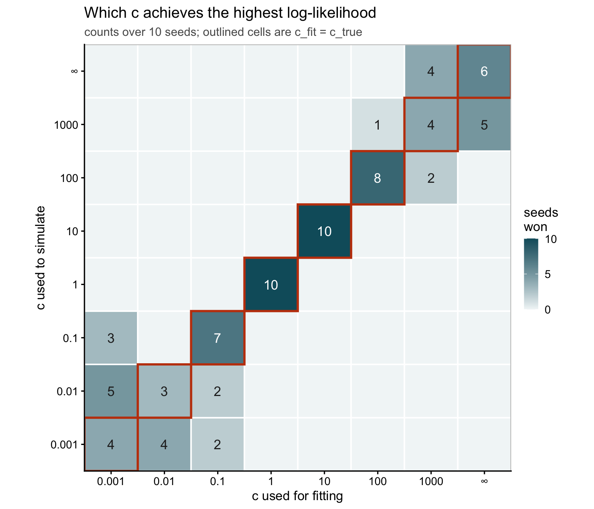
| Version | Author | Date |
|---|---|---|
| 356fc6c | Eric Weine | 2026-08-02 |
The likelihood recovers \(c\) in the middle of the range and nowhere else. At \(c_{\text{true}} = 1\) and \(10\) the correct value wins all ten seeds. But the winners scatter across \(\{10^{-3}, 10^{-2}, 10^{-1}\}\) at the small end and across \(\{100, 1000, \infty\}\) at the large end.
This is exactly what the theory predicts. The score for \(c\) points in the direction \(\Phi_{ij} = \lambda_{ij}/(\lambda_{ij}+c)\), which collapses to \(\theta\) when \(\lambda \ll c\) and to a constant when \(\lambda \gg c\) — and both of those are absorbed by the factorization itself. So the profile likelihood is flat at both ends and only the elbow carries information about \(c\).
## Shared layout for the by-c_true panels: all 10 seeds as thin lines plus their
## mean, with the matching c_fit circled. Keeping the seeds visible shows whether
## a flat region is flat for every seed or only on average.
panels <- function(dat, yvar, ylab, title, subtitle, ref = NULL, ...) {
dat$.y <- dat[[yvar]]
avg <- aggregate(.y ~ ct + cf, data = dat, FUN = mean)
dg <- merge(unique(dat[as.character(dat$cf) == as.character(dat$cf_lab),
c("ct", "cf")]), avg, by = c("ct", "cf"))
p <- ggplot(dat, aes(cf, .y)) +
geom_line(aes(group = seed), colour = "#9BB7BD", linewidth = 0.35, alpha = 0.8)
if (!is.null(ref)) {
rf <- aggregate(stats::as.formula(paste(ref, "~ ct")), data = dat, FUN = mean)
names(rf)[2] <- ".ref"
p <- p + geom_hline(data = rf, aes(yintercept = .ref), linetype = "dashed",
colour = "#C2410C", linewidth = 0.5)
}
p + geom_line(data = avg, aes(group = 1), colour = "#0E5C6B", linewidth = 1) +
geom_point(data = avg, colour = "#0E5C6B", size = 1.6) +
geom_point(data = dg, shape = 21, size = 3.6, stroke = 1.1, fill = NA,
colour = "#C2410C") +
facet_wrap(~ ct, nrow = 2) +
scale_y_continuous(...) +
labs(x = "c used for fitting", y = ylab, title = title, subtitle = subtitle) +
theme(strip.background = element_blank(),
strip.text = element_text(face = "bold", size = 10),
plot.title = element_text(size = 13, face = "plain"),
plot.subtitle = element_text(size = 10, colour = "grey35"),
panel.border = element_rect(colour = "grey80", fill = NA),
axis.text.x = element_text(size = 8))
}
SUB <- "thin lines: 10 individual seeds; thick line: mean; circled: c_fit = c_true"
SUB_REF <- paste(SUB, "\ndashed: the true value for that simulation")panels(b, "subopt",
ylab = "log-likelihood shortfall from that seed's best c (0 = best)",
title = "Cost of fitting at the wrong c", subtitle = SUB,
trans = "log1p", breaks = c(0, 1, 10, 100, 1000),
labels = c("0", "1", "10", "100", "1000"))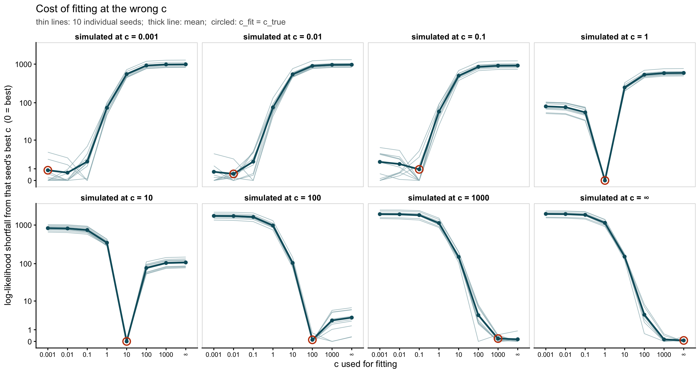
| Version | Author | Date |
|---|---|---|
| 356fc6c | Eric Weine | 2026-08-02 |
\(y\) is measured down from
each seed’s own best \(c\),
because raw log-likelihoods cannot be overlaid across seeds — each seed
is a different dataset, so the curves would be offset by dataset-level
constants of a few hundred and the shape would be unreadable. It is on a
log1p scale because the shortfall is exactly \(0\) at the winner, which a log scale could
not show.
Panels share a \(y\) scale deliberately: the penalty for being in the wrong regime ($\(1000) dwarfs the penalty within a regime (\)\(1), and a free\)y$ would rescale each panel and hide that.
Before looking at the factors, it is worth checking the quantity the likelihood actually pins down: the fitted rates \(\hat\lambda\). Below, for one seed, are the three simulations at \(c = 10^{-3}\), \(1\) and \(\infty\), each fitted at its own \(c\) — so these are the well-specified cells on the diagonal. Every entry of the \(300\times300\) matrix is plotted, true rate against fitted rate, on log axes with \(y = x\) marked.
CS <- c(1e-3, 1, Inf)
fmtc <- function(z) if (is.infinite(z)) "Inf" else
format(z, scientific = FALSE, trim = TRUE, drop0trailing = TRUE)
panel_labs <- vapply(CS, function(z)
sprintf("simulated and fitted at c = %s", fmtc(z)), character(1))
rate_dat <- do.call(rbind, lapply(CS, function(cc) {
dd <- sim_dataset(1, cc)
x <- readRDS(file.path(cells_dir, paste0(
tag_of(list(seed = 1, c_true = cc, c_fit = cc)), ".rds")))
L <- x$fits$rank1$LL; Fm <- x$fits$rank1$FF
lf <- if (is.infinite(cc)) tcrossprod(L, Fm) else
cc * expm1(tcrossprod(L, Fm) / max(1, cc))
data.frame(true = as.vector(dd$lambda), fitted = pmax(as.vector(lf), 1e-6),
panel = sprintf("simulated and fitted at c = %s", fmtc(cc)))
}))
rate_dat$panel <- factor(rate_dat$panel, levels = panel_labs)
stopifnot(!any(is.na(rate_dat$panel)))
ggplot(rate_dat, aes(true, fitted)) +
geom_abline(slope = 1, intercept = 0, colour = "#C2410C", linewidth = 0.7) +
geom_bin2d(bins = 90) +
scale_fill_gradient(low = "#DDE8EA", high = "#0E5C6B", trans = "log10",
name = "entries") +
facet_wrap(~ panel, nrow = 1, scales = "free") +
scale_x_log10() + scale_y_log10() +
labs(x = "true rate", y = "fitted rate",
title = "Fitted vs true rates, seed 1, well-specified fits",
subtitle = "each panel: 90,000 matrix entries. orange line is y = x") +
theme(strip.background = element_blank(),
strip.text = element_text(face = "bold", size = 10),
panel.border = element_rect(colour = "grey80", fill = NA))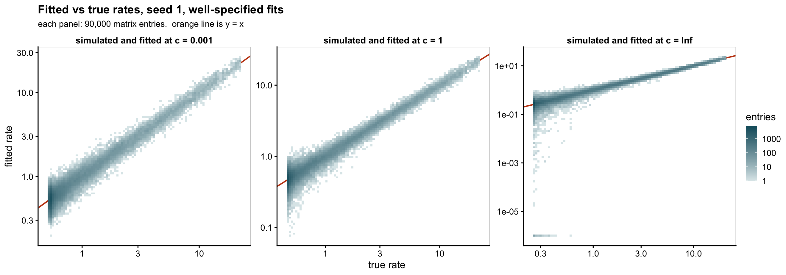
Warning: The above code chunk cached its results, but
it won’t be re-run if previous chunks it depends on are updated. If you
need to use caching, it is highly recommended to also set
knitr::opts_chunk$set(autodep = TRUE) at the top of the
file (in a chunk that is not cached). Alternatively, you can customize
the option dependson for each individual chunk that is
cached. Using either autodep or dependson will
remove this warning. See the
knitr cache options for more details.
knitr::kable(do.call(rbind, lapply(CS, function(cc) {
dd <- sim_dataset(1, cc)
x <- readRDS(file.path(cells_dir, paste0(
tag_of(list(seed = 1, c_true = cc, c_fit = cc)), ".rds")))
L <- x$fits$rank1$LL; Fm <- x$fits$rank1$FF
lf <- if (is.infinite(cc)) tcrossprod(L, Fm) else
cc * expm1(tcrossprod(L, Fm) / max(1, cc))
lt <- as.vector(dd$lambda); lf <- as.vector(lf)
data.frame(c = fmtc(cc),
`true min` = min(lt), `true max` = max(lt),
`fitted min` = min(lf), `fitted max` = max(lf),
`cor(log)` = cor(log(lt), log(pmax(lf, 1e-12))),
`RMSE(log1p)` = sqrt(mean((log1p(lt) - log1p(pmax(lf, 0)))^2)),
check.names = FALSE)
})), digits = 4, row.names = FALSE)| c | true min | true max | fitted min | fitted max | cor(log) | RMSE(log1p) |
|---|---|---|---|---|---|---|
| 0.001 | 0.5307 | 22.7630 | 0.1929 | 26.1958 | 0.9654 | 0.0654 |
| 1 | 0.4704 | 22.0893 | 0.0782 | 25.4180 | 0.9753 | 0.0624 |
| Inf | 0.2587 | 20.7042 | 0.0000 | 22.8501 | 0.9087 | 0.0606 |
Three things to take from this.
The rates are recovered about equally well at every \(c\). The mass lies on \(y = x\) in all three panels and the RMSE on the log1p scale is essentially identical across them. This is the concrete version of a point that recurs below: the likelihood determines \(LF'\), and hence \(\hat\lambda\), but says much less about how that product is split into factors. Whatever \(c\) does to the factors, it barely touches the fit to the data.
The scatter widens at the low end in every panel — ordinary Poisson behaviour, since the information about a rate scales with the rate.
Only the \(c = \infty\) panel has a tail of entries driven to essentially zero, visible as the smear along the bottom reaching \(10^{-9}\); the other two panels stop cleanly at their smallest true rate. With a linear link the model can place structural near-zeros, and at small \(c\) it cannot. That is the same floor that drives the sparsity results below, seen directly in the rates rather than through a sparsity measure.
These metrics must fix the initialization, unlike the likelihood ones. The two inits agree to within 0.008 log-likelihood everywhere, so selecting on log-likelihood is effectively a coin flip — but the resulting fits are not equivalent: 29% of cells differ by more than 0.01 in Hoyer sparsity, and at \(c_{\text{fit}} = 10^{-3}\) the rank-1 start gives about twice the factor sparsity of the random start. Random also wins the tie in all 80 cells at that \(c_{\text{fit}}\), so “best of both” would silently report the random answer at the small-\(c\) end and a mixture elsewhere.
w <- reshape(d[, c("seed","c_true","c_fit","init","hoyer_L","hoyer_F","rankcor_F")],
idvar = c("seed","c_true","c_fit"), timevar = "init", direction = "wide")
knitr::kable(data.frame(
metric = c("hoyer_L", "hoyer_F", "rankcor_F"),
`cells differing by > 0.01` = sapply(c("hoyer_L","hoyer_F","rankcor_F"), function(m)
sum(abs(w[[paste0(m, ".rank1")]] - w[[paste0(m, ".random")]]) > 0.01)),
check.names = FALSE, row.names = NULL),
caption = "Out of 640 cells, despite log-likelihoods agreeing to 0.008.")| metric | cells differing by > 0.01 |
|---|---|
| hoyer_L | 185 |
| hoyer_F | 189 |
| rankcor_F | 186 |
mk <- function(ini) {
x <- d[d$init == ini, ]
x$cf <- fc(x$c_fit)
x$cf_lab <- fc(x$c_true)
x$ct <- factor(paste("simulated at c =", fc(x$c_true)),
levels = paste("simulated at c =", CLAB))
x
}
b_rank1 <- mk("rank1")
b_random <- mk("random")Hoyer sparsity of a length-\(n\) column is \((\sqrt{n} - \|x\|_1/\|x\|_2)/(\sqrt{n}-1)\): \(0\) when every entry is equal, \(1\) when a single entry carries everything. We average it over the \(K\) columns.
panels(b_rank1, "hoyer_L", ref = "hoyer_L_true",
ylab = "mean Hoyer sparsity of loadings",
title = "Sparsity of the recovered loadings — rank-1 initialization",
subtitle = SUB_REF)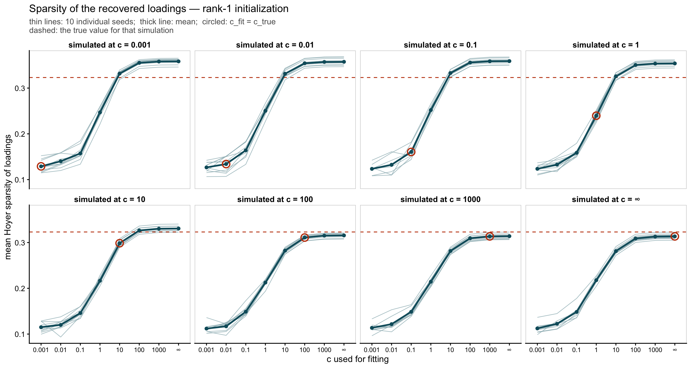
| Version | Author | Date |
|---|---|---|
| 356fc6c | Eric Weine | 2026-08-02 |
panels(b_random, "hoyer_L", ref = "hoyer_L_true",
ylab = "mean Hoyer sparsity of loadings",
title = "Sparsity of the recovered loadings — random initialization",
subtitle = SUB_REF)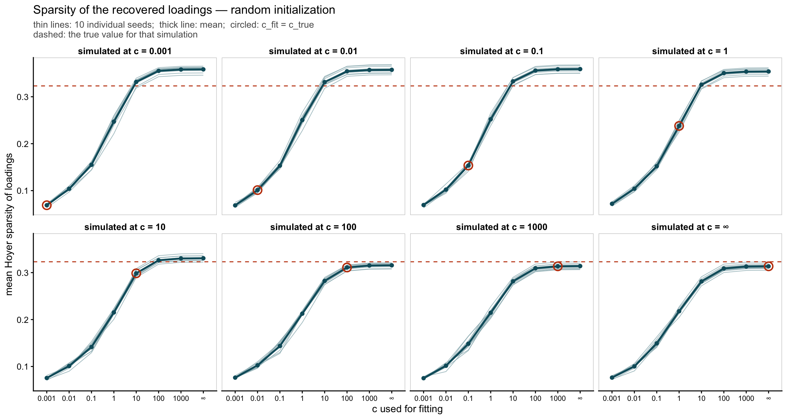
| Version | Author | Date |
|---|---|---|
| 356fc6c | Eric Weine | 2026-08-02 |
The dashed reference is identical in every panel, as it must be: \(L\) is drawn once per seed and shared across all \(c_{\text{true}}\).
panels(b_rank1, "hoyer_F", ref = "hoyer_F_true",
ylab = "mean Hoyer sparsity of factors",
title = "Sparsity of the recovered factors — rank-1 initialization",
subtitle = SUB_REF)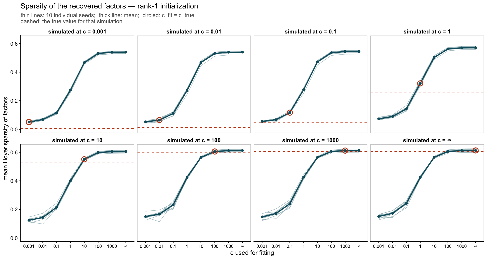
| Version | Author | Date |
|---|---|---|
| 356fc6c | Eric Weine | 2026-08-02 |
panels(b_random, "hoyer_F", ref = "hoyer_F_true",
ylab = "mean Hoyer sparsity of factors",
title = "Sparsity of the recovered factors — random initialization",
subtitle = SUB_REF)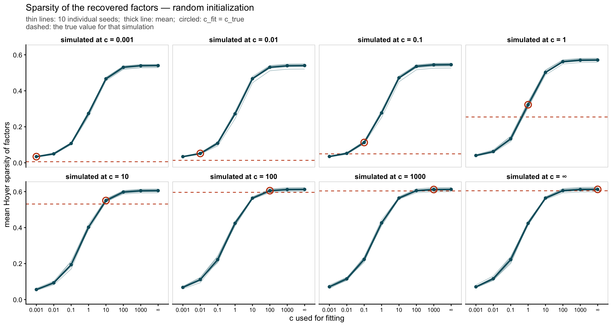
| Version | Author | Date |
|---|---|---|
| 356fc6c | Eric Weine | 2026-08-02 |
The reference here is the sparsity of the realized
truth \(F_c = \alpha_c F_0 + \beta_c\),
which is what the fit estimates. It rises with \(c_{\text{true}}\) and sits near zero at the
small-\(c\) end, because \(\beta_c\) puts a floor under every entry
even though \(F_0\) is 50% exact zeros.
(hoyer_F0_true in the metrics table holds the sparsity of
\(F_0\) itself if that is the
comparison you want.)
Across both sparsity figures the striking feature is that the curves barely depend on which panel you are in: sparsity is close to a pure function of \(c_{\text{fit}}\), largely regardless of what generated the data. Fitting at a larger \(c\) gives a sparser answer whether or not that is true of the truth.
panels(b_rank1, "rankcor_F", ref = "rankcor_F_true",
ylab = "mean rank correlation between factors",
title = "Rank correlation between recovered factors — rank-1 initialization",
subtitle = SUB_REF)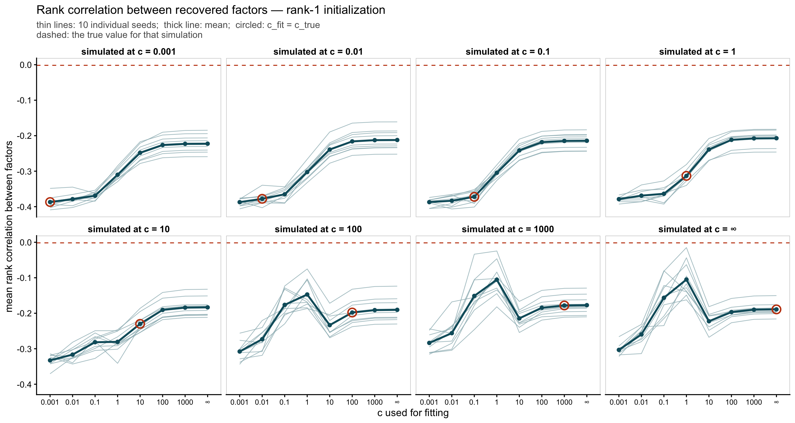
| Version | Author | Date |
|---|---|---|
| 356fc6c | Eric Weine | 2026-08-02 |
panels(b_random, "rankcor_F", ref = "rankcor_F_true",
ylab = "mean rank correlation between factors",
title = "Rank correlation between recovered factors — random initialization",
subtitle = SUB_REF)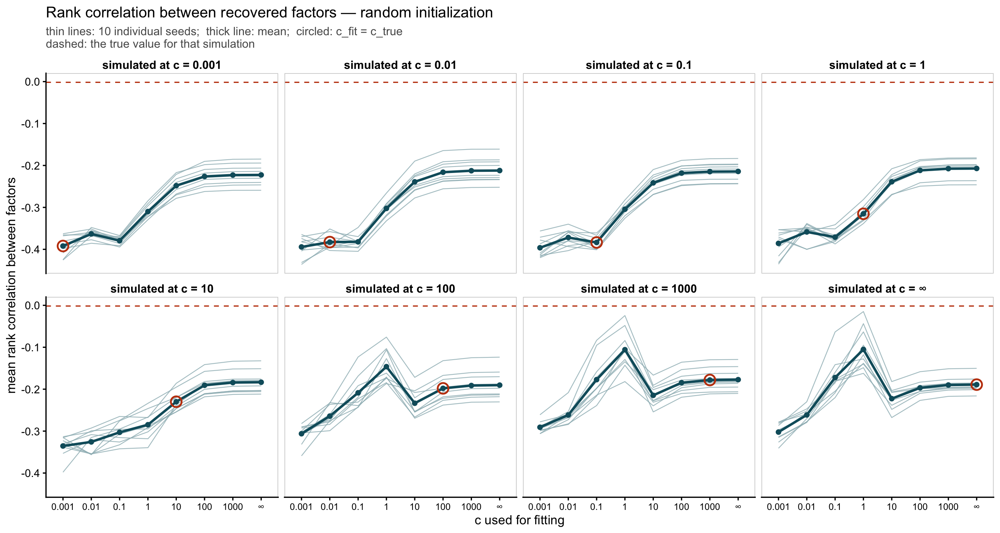
| Version | Author | Date |
|---|---|---|
| 356fc6c | Eric Weine | 2026-08-02 |
Mean Spearman correlation over the \(K(K-1)/2\) distinct factor pairs. The dashed reference is again identical across panels — Spearman correlation is invariant to the positive affine map \(F_c = \alpha_c F_0 + \beta_c\), so the truth’s value is the same at every \(c_{\text{true}}\).
Structure plots of the fitted \(L\) at every \(c_{\text{fit}}\), with the truth shown first, for three simulated datasets: the smallest \(c_{\text{true}}\) on the grid, \(c_{\text{true}} = 1\), and \(c_{\text{true}} = \infty\). Together they span the log-additive end, the elbow, and the linear (topic-model) end.
Normalization is the paper convention and nothing else: each loading
column is divided by its maximum so every factor peaks at one. There is
no row normalization, so bars vary in total height —
structure_plot row-normalizes only when handed a fit
object, not a matrix.
That height is worth reading rather than ignoring. After column normalization, a tall bar means the sample carries substantial weight on several factors at once, and a short one means its weight is concentrated. The panels at small \(c_{\text{fit}}\) are visibly taller than those at large \(c_{\text{fit}}\), which is the same finding as the Hoyer figures above, seen sample by sample. All nine panels within a figure therefore share one \(y\) limit; letting each rescale itself would erase exactly that comparison.
The fitted factors are permuted to the truth by the rule the metrics use — the column permutation maximizing total correlation with the true \(L\). Without it each panel would differ from the truth by an arbitrary relabelling and every fit would look wrong.
Edit pick_seed and pick_init and
re-run to walk around the grid. Note the true \(L\) is drawn once per seed and shared
across every \(c_{\text{true}}\), so
the “TRUE L” panel is the same in all three figures; only the fitted
panels move.
pick_seed <- 1
pick_init <- "rank1" # "rank1" or "random"fmtc <- function(x) format(x, scientific = FALSE, trim = TRUE)
cell_file <- function(seed, c_true, c_fit)
file.path(cells_dir,
paste0(tag_of(list(seed = seed, c_true = c_true, c_fit = c_fit)), ".rds"))
## L is drawn once per seed, so the truth and the cell ordering are shared by all
## three figures below
Lt <- readRDS(cell_file(pick_seed, C_GRID[1], C_GRID[1]))$L_true
dom <- max.col(Lt)
ord <- order(dom, -Lt[cbind(seq_along(dom), dom)])
grp <- factor(dom[ord])
TOP <- paste0("k", seq_len(ncol(Lt)))
FCOL <- setNames(c("#0E8FA8", "#C2410C", "#6D3FC4")[seq_along(TOP)], TOP)
norm_bars <- function(M) { # column max -> 1, and nothing else
M <- pmax(M[ord, , drop = FALSE], 0)
sweep(M, 2, apply(M, 2, max), "/")
}
leg <- get_legend(
ggplot(data.frame(x = 1, f = factor(TOP, levels = TOP)), aes(x, 1, fill = f)) +
geom_col() + scale_fill_manual(values = FCOL, name = "factor") +
theme_cowplot() + theme(legend.position = "right"))
#' One 3 x 3 grid: true L, then the fit at each c_fit, for a given c_true.
structure_grid <- function(c_true, seed = pick_seed, init = pick_init) {
fits <- lapply(C_GRID, function(cf) {
x <- readRDS(cell_file(seed, c_true, cf))
Lf <- x$fits[[init]]$LL
list(L = Lf[, match_factors(Lt, Lf), drop = FALSE],
lab = sprintf("c_fit = %s (L cor %.3f)", fmtc(cf),
x$rows$L_cor_mean[x$rows$init == init]))
})
## Without row normalization the bars do not all reach the same height, so a
## per-panel y scale would rescale each panel and make the columns look more
## alike than they are. One shared limit within a figure keeps them comparable.
ymax <- max(vapply(c(list(Lt), lapply(fits, `[[`, "L")),
function(M) max(rowSums(norm_bars(M))), numeric(1)))
sp <- function(M, title) {
Mn <- norm_bars(M); colnames(Mn) <- TOP
structure_plot(Mn, loadings_order = seq_len(nrow(Mn)), grouping = grp,
gap = 6, topics = TOP, colors = FCOL) +
coord_cartesian(ylim = c(0, ymax)) +
labs(x = NULL, y = "scaled loading", title = title) +
theme(plot.title = element_text(size = 10, face = "bold"),
axis.text.x = element_blank(), axis.ticks.x = element_blank(),
legend.position = "none")
}
plots <- c(list(sp(Lt, "TRUE L")),
lapply(fits, function(z) sp(z$L, z$lab)))
ttl <- ggdraw() + draw_label(
sprintf("seed %d, simulated at c = %s, %s init — cells ordered by true dominant factor",
seed, fmtc(c_true), init), x = 0.01, hjust = 0, size = 12)
plot_grid(ttl,
plot_grid(plot_grid(plotlist = plots, ncol = 3), leg,
ncol = 2, rel_widths = c(1, 0.08)),
ncol = 1, rel_heights = c(0.04, 1))
}structure_grid(min(C_GRID))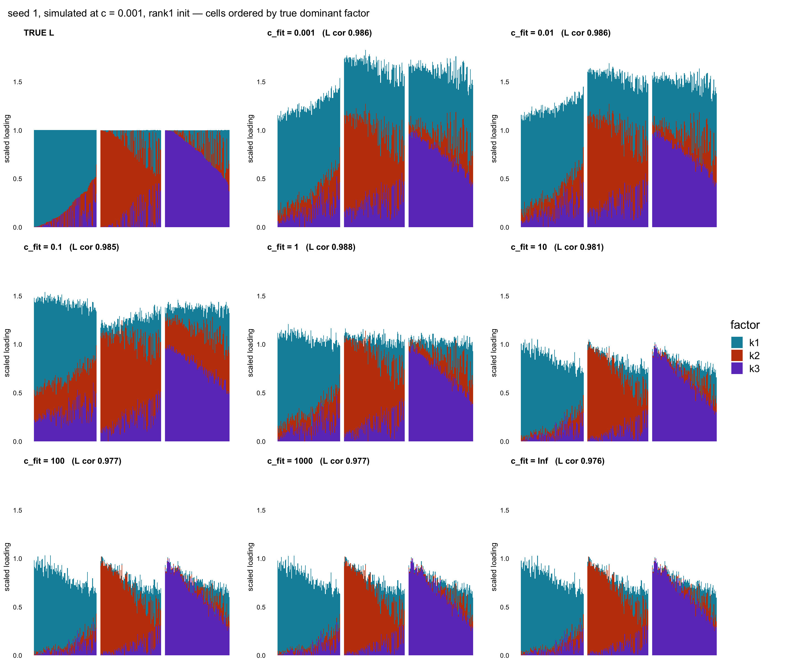
| Version | Author | Date |
|---|---|---|
| 356fc6c | Eric Weine | 2026-08-02 |
structure_grid(1)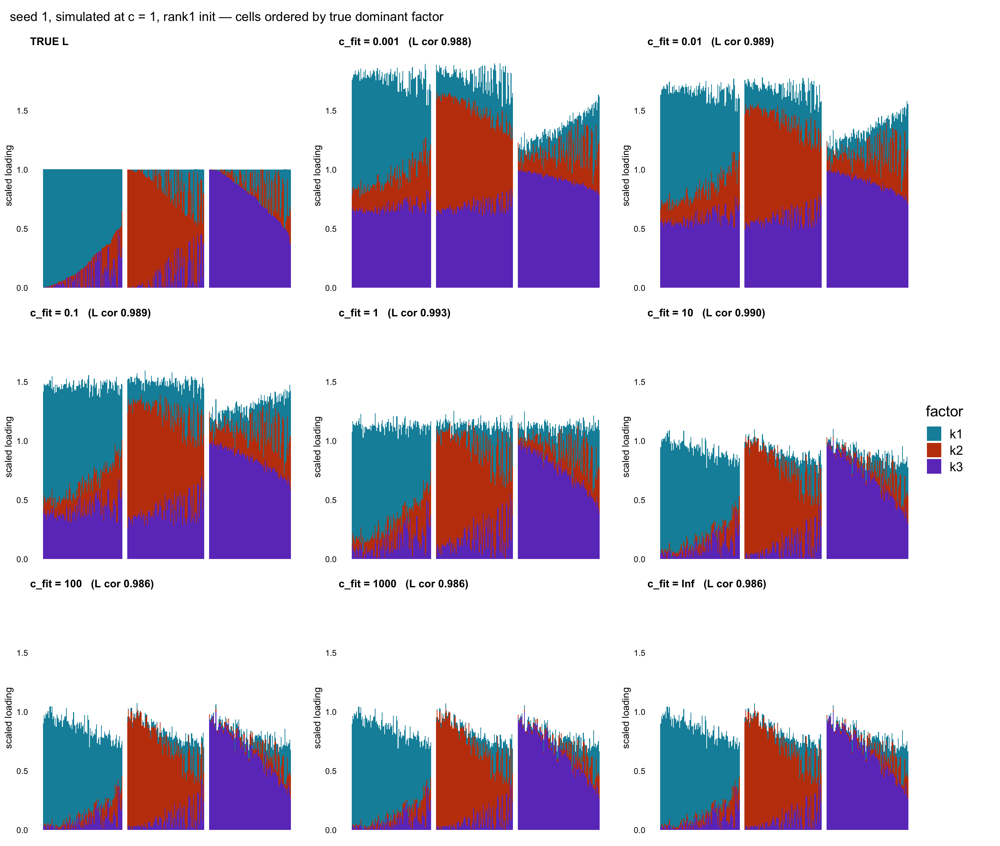
| Version | Author | Date |
|---|---|---|
| 356fc6c | Eric Weine | 2026-08-02 |
structure_grid(Inf)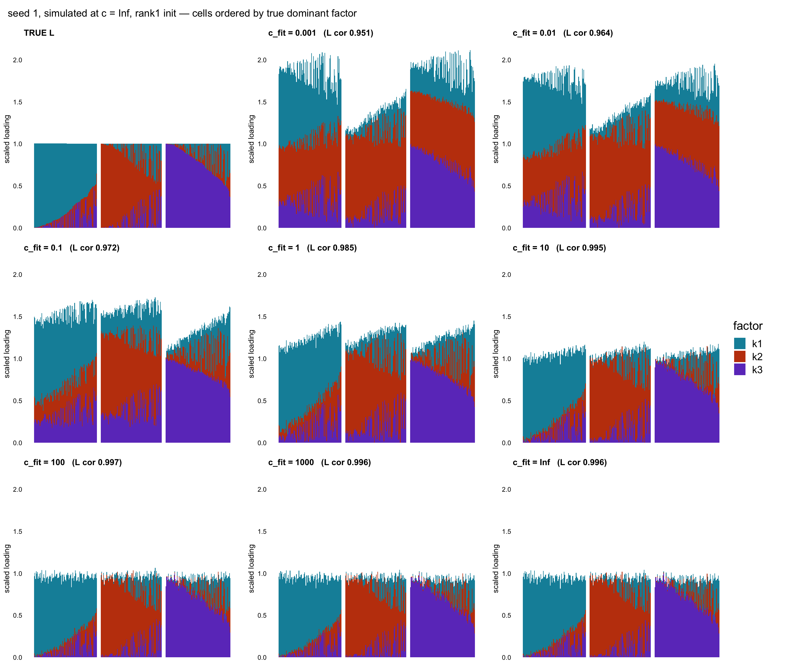
| Version | Author | Date |
|---|---|---|
| 356fc6c | Eric Weine | 2026-08-02 |
The sparsity figures show something odd: when the data are generated at \(c = 10^{-3}\) and fitted at \(c = 10^{-3}\) — the fit that also achieves the best log-likelihood — the recovered loadings are far less sparse than the true loadings (Hoyer \(\approx 0.13\) against a truth of \(0.32\)). At large \(c\) the same comparison is nearly exact. Why?
An NMF is only ever determined up to an invertible \(T\):
\[ LF' = (LT)(FT^{-\top})', \]
so any \(T\) for which both \(LT \ge 0\) and \(FT^{-\top} \ge 0\) gives a different parameter value with an identical likelihood. That is the whole ambiguity; the question is only how large the set of admissible \(T\) is.
A convenient one-parameter slice through it blends each factor slightly into the others:
\[ T_t = (1-t)\,I + \frac{t}{K}\mathbf{1}\mathbf{1}', \qquad T_t^{-1} = \frac{1}{1-t}\left(I - \frac{t}{K}\mathbf{1}\mathbf{1}'\right). \]
Here \(t\) is a mixing fraction, not Euler’s number — it is how much of each factor gets blended into the others. \(t = 0\) is the identity and changes nothing; \(t \to 1\) drives all \(K\) factors toward being identical. Written out, the two sides move in opposite directions:
\[ L \;\mapsto\; LT_t \quad\text{(blends the loading columns together)}, \qquad F \;\mapsto\; FT_t^{-1} = \frac{1}{1-t}\Bigl(F - \tfrac{t}{K}\,\text{rowSums}(F)\,\mathbf{1}'\Bigr) \quad\text{(subtracts a per-feature constant)}. \]
So raising \(t\) makes \(L\) denser and \(F\) sparser at the same time. Nothing here is special to \(L\): sparsity is simply being moved from one side to the other, and the likelihood is indifferent to where it sits.
hoy <- function(v) { v <- abs(v); n <- length(v)
(sqrt(n) - sum(v)/sqrt(sum(v^2))) / (sqrt(n) - 1) }
mh <- function(M) mean(apply(M, 2, hoy))
dsm <- sim_dataset(1, min(C_GRID))
L0 <- dsm$truth$L; F0c <- dsm$FF_true; KK <- ncol(L0)
knitr::kable(do.call(rbind, lapply(c(-0.3, -0.1, 0, 0.1, 0.3, 0.5, 0.7), function(t) {
Tm <- (1 - t) * diag(KK) + (t / KK) * matrix(1, KK, KK)
Li <- L0 %*% Tm; Fi <- F0c %*% t(solve(Tm))
data.frame(t = t,
`both nonneg` = min(Li) >= -1e-9 && min(Fi) >= -1e-9,
`Hoyer of L` = mh(Li),
`Hoyer of F` = mh(Fi),
`max |change in theta|` = max(abs(tcrossprod(Li, Fi) -
tcrossprod(L0, F0c))),
check.names = FALSE)
})), digits = 3,
caption = "Truth at c = 0.001 under the mixing family. t = 0 is the truth itself.")| t | both nonneg | Hoyer of L | Hoyer of F | max |change in theta| |
|---|---|---|---|---|
| -0.3 | FALSE | 0.318 | 0.005 | 0 |
| -0.1 | FALSE | 0.331 | 0.005 | 0 |
| 0.0 | TRUE | 0.324 | 0.006 | 0 |
| 0.1 | TRUE | 0.285 | 0.007 | 0 |
| 0.3 | TRUE | 0.202 | 0.010 | 0 |
| 0.5 | TRUE | 0.119 | 0.018 | 0 |
| 0.7 | TRUE | 0.048 | 0.043 | 0 |
\(\theta\) is unchanged to machine precision throughout, so every admissible row of that table has exactly the same likelihood as the truth. Yet the sparsity of \(L\) ranges over an order of magnitude, and \(F\) moves the other way. The truth’s particular split is one arbitrary point on a continuum; no amount of data can single it out.
Note the freedom is one-sided here: \(t < 0\) (which would make \(L\) sparser and \(F\) denser) is infeasible. Since \(\text{rowSums}(L) = 1\), \(LT_t\) at \(t<0\) equals \((1+|t|)L - \tfrac{|t|}{K}\mathbf{1}\mathbf{1}'\), and the many tiny \(\text{Dirichlet}(0.3)\) entries of \(L\) go negative immediately.
Mixing can continue only until some entry of \(LT_t\) or \(FT_t^{-1}\) reaches zero. Nonnegativity is the only thing pinning an NMF down, so the size of the admissible set is governed by how close the factors come to zero. And that is exactly what \(c\) controls, because the calibrated truth is \(F_c = \alpha_c F_0 + \beta_c\) — a floor of \(\beta_c\) under every entry.
tr0 <- sim_truth(1)
## largest mixing fraction t that keeps both factors nonnegative
max_mix <- function(L, F) {
feas <- function(t) { Tm <- (1-t)*diag(KK) + (t/KK)*matrix(1, KK, KK)
min(L %*% Tm) >= -1e-9 && min(F %*% t(solve(Tm))) >= -1e-9 }
if (!feas(1e-6)) return(0)
lo <- 0; hi <- 1
for (i in 1:40) { mid <- (lo + hi)/2; if (feas(mid)) lo <- mid else hi <- mid }
lo
}
free <- do.call(rbind, lapply(C_GRID, function(cc) {
dd <- sim_dataset(1, cc, tr0)
th <- dd$alpha * tr0$theta0 + dd$beta
t <- max_mix(tr0$L, dd$FF_true)
Tm <- (1 - t) * diag(KK) + (t / KK) * matrix(1, KK, KK)
sub <- d$c_true == cc & d$c_fit == cc & d$init == "rank1"
data.frame(c_true = cc,
`floor / mean theta` = dd$beta / mean(th),
`largest feasible t` = t,
`Hoyer L at that t` = mh(tr0$L %*% Tm),
`Hoyer L fitted` = mean(d$hoyer_L[sub]),
`Hoyer L true` = mh(tr0$L),
`Hoyer F at that t` = mh(dd$FF_true %*% t(solve(Tm))),
`Hoyer F fitted` = mean(d$hoyer_F[sub]),
`Hoyer F true` = mh(dd$FF_true),
check.names = FALSE)
}))
knitr::kable(free, digits = 3, row.names = FALSE)| c_true | floor / mean theta | largest feasible t | Hoyer L at that t | Hoyer L fitted | Hoyer L true | Hoyer F at that t | Hoyer F fitted | Hoyer F true |
|---|---|---|---|---|---|---|---|---|
| 1e-03 | 0.955 | 0.743 | 0.036 | 0.129 | 0.324 | 0.057 | 0.051 | 0.006 |
| 1e-02 | 0.932 | 0.649 | 0.064 | 0.134 | 0.324 | 0.072 | 0.065 | 0.014 |
| 1e-01 | 0.866 | 0.470 | 0.131 | 0.160 | 0.324 | 0.120 | 0.117 | 0.051 |
| 1e+00 | 0.641 | 0.201 | 0.244 | 0.240 | 0.324 | 0.313 | 0.321 | 0.257 |
| 1e+01 | 0.283 | 0.059 | 0.301 | 0.299 | 0.324 | 0.544 | 0.551 | 0.528 |
| 1e+02 | 0.158 | 0.029 | 0.313 | 0.311 | 0.324 | 0.598 | 0.605 | 0.591 |
| 1e+03 | 0.141 | 0.026 | 0.314 | 0.313 | 0.324 | 0.605 | 0.612 | 0.598 |
| Inf | 0.139 | 0.025 | 0.315 | 0.313 | 0.324 | 0.605 | 0.613 | 0.599 |
Warning: The above code chunk cached its results, but
it won’t be re-run if previous chunks it depends on are updated. If you
need to use caching, it is highly recommended to also set
knitr::opts_chunk$set(autodep = TRUE) at the top of the
file (in a chunk that is not cached). Alternatively, you can customize
the option dependson for each individual chunk that is
cached. Using either autodep or dependson will
remove this warning. See the
knitr cache options for more details.
At \(c = 10^{-3}\) the constant floor is 96% of \(\theta\): no entry of \(F_c\) is anywhere near zero, no nonnegativity constraint is active, and the trade can run all the way to \(t = 0.74\). At \(c = \infty\) the floor is 14% — \(F_c\) keeps the near-zeros inherited from \(F_0\)’s 50% exact zeros, the constraints bite, and only \(t = 0.025\) is available.
gap <- free[["Hoyer L true"]] - free[["Hoyer L fitted"]]
c(`cor(floor fraction, L sparsity gap)` = cor(free[[2]], gap),
`cor(largest feasible t, L gap)` = cor(free[[3]], gap))cor(floor fraction, L sparsity gap) cor(largest feasible t, L gap)
0.9858721 0.9852302 Compare the “Hoyer L at that t” and “Hoyer L fitted” columns for \(c \ge 1\): the optimizer lands essentially exactly at the densest admissible point. It takes all the slack the constraints allow, and coordinate descent from either start spreads mass across factors with nothing pulling it back.
Worth checking that the dense solution is not somehow a genuinely better explanation. It does beat the true parameters on the training data, but by about the amount generic overfitting predicts:
dsm1 <- sim_dataset(1, min(C_GRID))
xx <- readRDS(cell_file(1, min(C_GRID), min(C_GRID)))
Lf <- xx$fits$rank1$LL; Ff <- xx$fits$rank1$FF
pll <- function(lam) sum(dsm1$Y * log(pmax(lam, 1e-300)) - lam - lgamma(dsm1$Y + 1))
lam_fit <- min(C_GRID) * expm1(tcrossprod(Lf, Ff) / max(1, min(C_GRID)))
c(fitted = pll(lam_fit),
`true parameters` = pll(dsm1$lambda),
advantage = pll(lam_fit) - pll(dsm1$lambda),
`free parameters / 2` = (K_TRUE * (N_ROWS + N_COLS) - K_TRUE^2) / 2) fitted true parameters advantage free parameters / 2
-99864.0074 -100789.7686 925.7613 895.5000 Some of it is. The \(\beta_c\) offset exists so the datasets are comparable across \(c\), and it is precisely what strips the zeros out of \(F_c\) at small \(c\). Without it, \(\theta\) would inherit \(\theta_0\)’s exact zeros — 50% of \(F_0\) — and the small-\(c\) fits would be far better pinned.
The mechanism is still real rather than purely an artifact: \(\theta = \log(1 + \lambda/c)\) is uniformly large when \(c\) is small relative to the rates, so near-zeros in \(\theta\) are intrinsically scarce there, whatever the simulation. But the magnitude seen above is amplified by the calibration, and the honest reading is:
At small \(c\) the log1p factorization is weakly identified in a specific way: the likelihood pins down \(LF'\) but says little about how sparsity is divided between \(L\) and \(F\). The sparsity of a small-\(c\) fit is therefore a property of the optimizer and the initialization as much as of the data — consistent with the two initializations reaching the same log-likelihood to within 0.008 while differing by up to 0.09 in Hoyer sparsity.
The mixing family above is only one convenient one-parameter slice through the admissible set of \(T\); the full set is larger, so these numbers are a lower bound on how much the split can move.
sessionInfo()R version 4.5.2 (2025-10-31)
Platform: aarch64-apple-darwin20
Running under: macOS Ventura 13.5
Matrix products: default
BLAS: /System/Library/Frameworks/Accelerate.framework/Versions/A/Frameworks/vecLib.framework/Versions/A/libBLAS.dylib
LAPACK: /Library/Frameworks/R.framework/Versions/4.5-arm64/Resources/lib/libRlapack.dylib; LAPACK version 3.12.1
locale:
[1] en_US.UTF-8/en_US.UTF-8/en_US.UTF-8/C/en_US.UTF-8/en_US.UTF-8
time zone: America/Denver
tzcode source: internal
attached base packages:
[1] stats graphics grDevices utils datasets methods base
other attached packages:
[1] log1pNMF_0.1-6 fastTopics_0.7-38 cowplot_1.2.0 ggplot2_4.0.3
[5] workflowr_1.7.2
loaded via a namespace (and not attached):
[1] tidyselect_1.2.1 viridisLite_0.4.3 dplyr_1.2.1
[4] farver_2.1.2 S7_0.2.2 fastmap_1.2.0
[7] lazyeval_0.2.3 promises_1.5.0 digest_0.6.39
[10] lifecycle_1.0.5 processx_3.9.0 invgamma_1.2
[13] magrittr_2.0.5 compiler_4.5.2 rlang_1.2.0
[16] sass_0.4.10 progress_1.2.3 tools_4.5.2
[19] yaml_2.3.12 data.table_1.18.2.1 knitr_1.51
[22] labeling_0.4.3 prettyunits_1.2.0 htmlwidgets_1.6.4
[25] plyr_1.8.9 RColorBrewer_1.1-3 Rtsne_0.17
[28] withr_3.0.2 purrr_1.2.2 grid_4.5.2
[31] git2r_0.36.2 scales_1.4.0 gtools_3.9.5
[34] MASS_7.3-65 dichromat_2.0-0.1 cli_3.6.6
[37] rmarkdown_2.31 crayon_1.5.3 startupmsg_1.0.0
[40] generics_0.1.4 otel_0.2.0 RcppParallel_5.1.11-2
[43] rstudioapi_0.18.0 httr_1.4.8 reshape2_1.4.5
[46] pbapply_1.7-4 cachem_1.1.0 stringr_1.6.0
[49] parallel_4.5.2 vctrs_0.7.3 Matrix_1.7-5
[52] jsonlite_2.0.0 callr_3.7.6 hms_1.1.4
[55] mixsqp_0.3-54 ggrepel_0.9.8 irlba_2.3.7
[58] plotly_4.12.0 jquerylib_0.1.4 tidyr_1.3.2
[61] glue_1.8.1 codetools_0.2-20 uwot_0.2.4
[64] stringi_1.8.7 gtable_0.3.6 later_1.4.8
[67] sfsmisc_1.1-23 quadprog_1.5-8 tibble_3.3.1
[70] pillar_1.11.1 htmltools_0.5.9 truncnorm_1.0-9
[73] R6_2.6.1 rprojroot_2.1.1 evaluate_1.0.5
[76] lattice_0.22-9 RhpcBLASctl_0.23-42 SQUAREM_2026.1
[79] ashr_2.2-63 httpuv_1.6.17 bslib_0.10.0
[82] Rcpp_1.1.1-1.1 distr_2.9.7 whisker_0.4.1
[85] xfun_0.57 fs_2.1.0 getPass_0.2-4
[88] pkgconfig_2.0.3
sessionInfo()R version 4.5.2 (2025-10-31)
Platform: aarch64-apple-darwin20
Running under: macOS Ventura 13.5
Matrix products: default
BLAS: /System/Library/Frameworks/Accelerate.framework/Versions/A/Frameworks/vecLib.framework/Versions/A/libBLAS.dylib
LAPACK: /Library/Frameworks/R.framework/Versions/4.5-arm64/Resources/lib/libRlapack.dylib; LAPACK version 3.12.1
locale:
[1] en_US.UTF-8/en_US.UTF-8/en_US.UTF-8/C/en_US.UTF-8/en_US.UTF-8
time zone: America/Denver
tzcode source: internal
attached base packages:
[1] stats graphics grDevices utils datasets methods base
other attached packages:
[1] log1pNMF_0.1-6 fastTopics_0.7-38 cowplot_1.2.0 ggplot2_4.0.3
[5] workflowr_1.7.2
loaded via a namespace (and not attached):
[1] tidyselect_1.2.1 viridisLite_0.4.3 dplyr_1.2.1
[4] farver_2.1.2 S7_0.2.2 fastmap_1.2.0
[7] lazyeval_0.2.3 promises_1.5.0 digest_0.6.39
[10] lifecycle_1.0.5 processx_3.9.0 invgamma_1.2
[13] magrittr_2.0.5 compiler_4.5.2 rlang_1.2.0
[16] sass_0.4.10 progress_1.2.3 tools_4.5.2
[19] yaml_2.3.12 data.table_1.18.2.1 knitr_1.51
[22] labeling_0.4.3 prettyunits_1.2.0 htmlwidgets_1.6.4
[25] plyr_1.8.9 RColorBrewer_1.1-3 Rtsne_0.17
[28] withr_3.0.2 purrr_1.2.2 grid_4.5.2
[31] git2r_0.36.2 scales_1.4.0 gtools_3.9.5
[34] MASS_7.3-65 dichromat_2.0-0.1 cli_3.6.6
[37] rmarkdown_2.31 crayon_1.5.3 startupmsg_1.0.0
[40] generics_0.1.4 otel_0.2.0 RcppParallel_5.1.11-2
[43] rstudioapi_0.18.0 httr_1.4.8 reshape2_1.4.5
[46] pbapply_1.7-4 cachem_1.1.0 stringr_1.6.0
[49] parallel_4.5.2 vctrs_0.7.3 Matrix_1.7-5
[52] jsonlite_2.0.0 callr_3.7.6 hms_1.1.4
[55] mixsqp_0.3-54 ggrepel_0.9.8 irlba_2.3.7
[58] plotly_4.12.0 jquerylib_0.1.4 tidyr_1.3.2
[61] glue_1.8.1 codetools_0.2-20 uwot_0.2.4
[64] stringi_1.8.7 gtable_0.3.6 later_1.4.8
[67] sfsmisc_1.1-23 quadprog_1.5-8 tibble_3.3.1
[70] pillar_1.11.1 htmltools_0.5.9 truncnorm_1.0-9
[73] R6_2.6.1 rprojroot_2.1.1 evaluate_1.0.5
[76] lattice_0.22-9 RhpcBLASctl_0.23-42 SQUAREM_2026.1
[79] ashr_2.2-63 httpuv_1.6.17 bslib_0.10.0
[82] Rcpp_1.1.1-1.1 distr_2.9.7 whisker_0.4.1
[85] xfun_0.57 fs_2.1.0 getPass_0.2-4
[88] pkgconfig_2.0.3